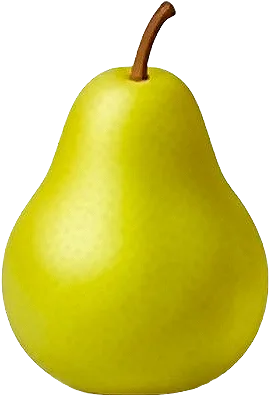

Poire

Cueillie avant maturité, elle finit de mûrir à température ambiante.
- Saison : août, septembre, octobre, novembre, décembre, janvier
- Pleine saison : septembre, octobre
- Famille botanique : Rosacées
Histoire
Originaire d’Asie et du Caucase, la poire était déjà appréciée des Grecs et des Romains. Louis XIV en raffolait : son jardinier Jean-Baptiste de La Quintinie en cultivait des centaines de variétés au Potager du roi, à Versailles. Beaucoup de variétés actuelles ont été obtenues en France et en Belgique au XIXᵉ siècle.
Origine et régions de production
La poire française est surtout cultivée dans le Sud-Est et l’Ouest :
- Auvergne-Rhône-Alpes (Savoie)
- Provence-Alpes-Côte d’Azur
- Val de Loire
Les poires de Savoie bénéficient d’une IGP.
Bienfaits
La poire est douce, fondante et désaltérante :
- Fibres : Elle en est l’un des fruits les plus riches.
- Énergie modérée : Environ 50 kcal/100 g.
- Potassium : Contribue à l’équilibre hydrique.
- Hydratante : Environ 84 % d’eau.
Variétés
- Williams : Très juteuse et parfumée, en fin d’été.
- Conférence : Allongée, peau rugueuse, se garde bien.
- Comice : Ronde et fondante, la plus fine.
- Beurré Hardy : Peau bronze, chair beurrée.
- Passe-Crassane : Poire d’hiver, se garde jusqu’au printemps.
Conserver sans gaspiller
- Conservation : À température ambiante pour mûrir, puis au frigo : 3 à 5 jours.
- Congélation : Pochée ou en compote : jusqu’à 12 mois. Crue, elle noircit.
- Rien ne se jette : Les poires trop mûres font une compote, un clafoutis ou un smoothie. Les épluchures parfument un sirop.